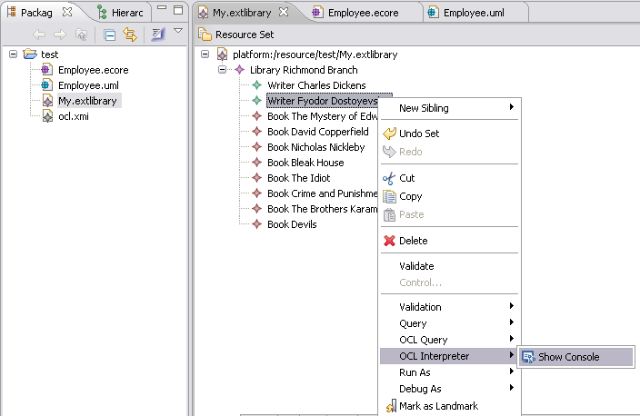
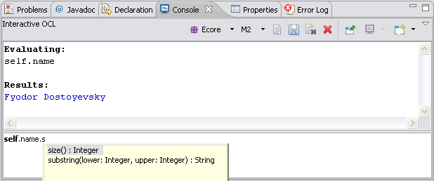
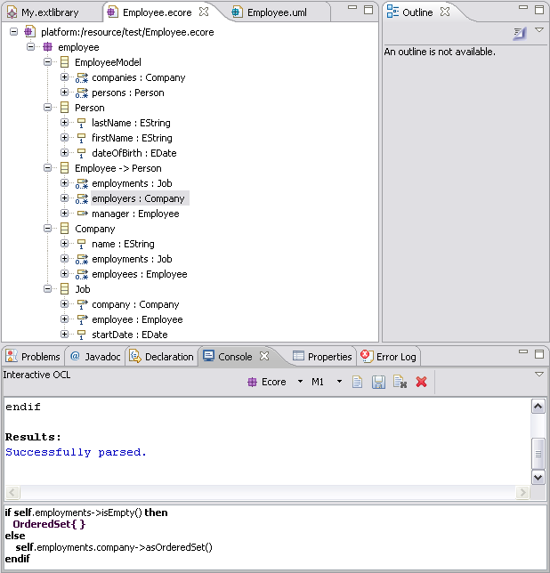
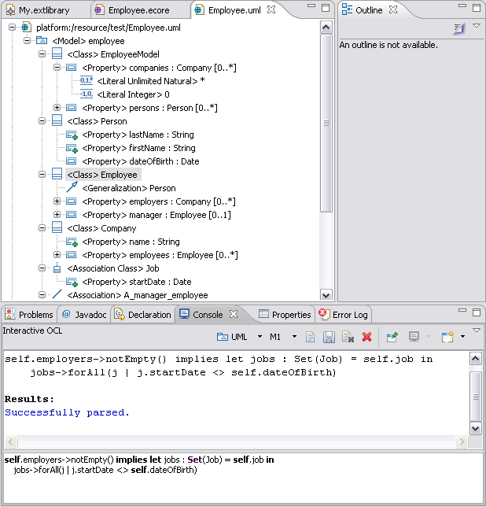

This example illustrates the usage of the generic OCL Parser API to parse and evaluate OCL query expressions and constraints within the SDK. It demonstrates how to author OCL expressions and evaluate them against elements of library model instances, or against Ecore and UML elements. For Ecore and UML models, a further option of parsing (not evaluating) model-level (M1 in the OMG modeling stack) constraints is available.
Please refer to the document Object Constraint Language Examples Overview for reviewing the library meta-model used as the basis for demonstrating the capabilities in this example.
This example plug-in is named org.eclipse.emf.ocl.examples.interpreter. This plug-in contributes the OCL Interpreter menu to the library editor's main menu and context menu. The menu has one item:
Please refer to the tutorial OCL Interpreter Tutorial for reviewing the code samples within this example.
The bottom field in the console accepts OCL expressions (comments supported). You can press Enter to evaluate on the currently selected element. You can press Ctrl+Enter or Shift+Enter to insert a newline. The top field shows the output and errors. The console can be cleared by the Eraser button and closed by the X button.
Because the EXTLibrary model is based on the Ecore metamodel, ensure that the Ecore metamodel is selected in the console's tool bar. Also ensure that the M2 modeling level is selected, as EXTLibrary is not a metamodel, so instances of it are not models. Thus, the OCL expressions that we create will target the Ecore meta-model, as the model of the EXTLibrary model.
Content-assist is automatically activated on typing any of ".", "->", "::", and "^". Also, Ctrl+Space can be used to invoke content-assist at any time.
The OCL Console contributes a Show OCL Console menu action to the Ecore and UML editors (for *.ecore and *.uml models). These actions automatically select the appropriate metamodel in the console.
For both Ecore and UML, parsing constraints at the M1 (model) level is supported. This implements a scratch pad for developing OCL constraints in the context of:
The console infers the kind of constraint from the selected element; in the case of an operation, it assumes a post-condition constraint as these constraints support a superset of the syntax for pre-conditions and body expressions.
The figure above shows the parsing of a derivation constraint on an Ecore property (an EStructuralFeature).
The figure above shows the parsing of an invariant constraint on a UML classifier (a Class). Note that UML can model the Job as an association class; a roughly equivalent Ecore model is more verbose.
Refer to the code in this example if you need to:
Copyright (c) 2000, 2007 IBM Corporation and others. All Rights Reserved.